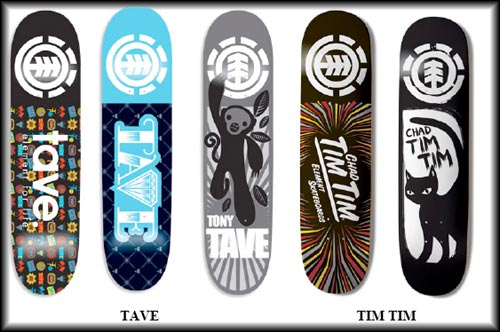
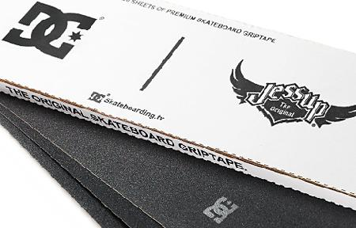
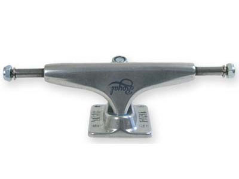
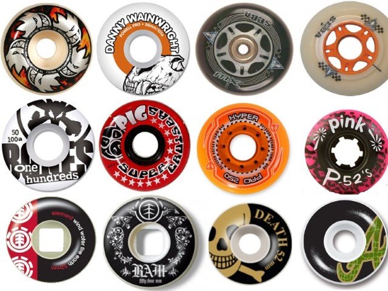
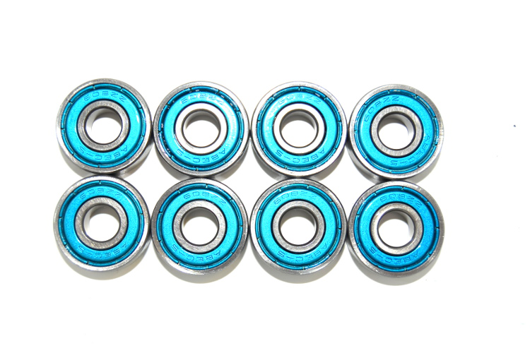
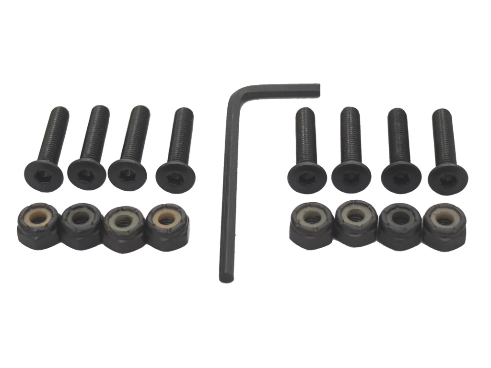

Madero: Actualmente la mayoría están hechas de 7 láminas de madera, generalmente canadiense. Las tablas tienen una forma especialmente diseñada para el skate. Un aspecto a tener en cuenta son las medidas, en especial el ancho de la tabla, según el tipo de skate a desarrollar.

Lija: Esta pegada justo encima del madero, sirve para proporcionar el agarre que se requiere para realizar los trucos. Cuando decimos "agarre" nos referimos a la tracción entre los zapatos y la tabla, para poder controlar el skateboard.

Ejes: Son dos y van acoplados a los lados, sin llegar a los extremos. Generalmente están hechos de aluminio, pero pueden ser de diversos metales. Los ejes soportan las ruedas, y sirven para realizar los giros, dado que poseen una goma flexible, que hace esto posible. También esta formado por diversos componentes, que se pueden cambiar y comprar por separado, tales como Kingpins (tornillo principal), gomas o chapas.

Ruedas: Son 4 y van adosadas a ambos extremos de los ejes, y están hechas de un material llamado uretano. Son de diferente tamaño en función del estilo de skate que se practica. Las más normales rondan entorno a los 52 mm. Sin embargo si el estilo es callejero, se usan ruedas pequeñas, menores a 53 mm de diámetro. En rampa, se usan ruedas grandes, para la velocidad; mayores de 56 mm. Si el estilo es mixto lo aconsejable son 54 - 55 mm. Normalmente cuanto más grande sea la rueda mayor es su dureza, y a más pequeña suele ser más blanda. Las ruedas duras se utilizan en suelos lisos como los skateparks, y las ruedas blandas para hacer street en suelos rugosos como la calle.

Rodamientos: Son un par de anillos metálicos con 6, 7 u 8 bolas en su interior, protegidos por dos discos finos. Suelen ser de aluminio. Cada skate lleva 8 rodamientos

Tornillería(chortis): Para el skate se necesitan 8 tornillos para mantener los ejes y la tabla unidos y 4 tuercas para que no se desprendan las ruedas, estas tuercas son enroscadas en el mismo eje.